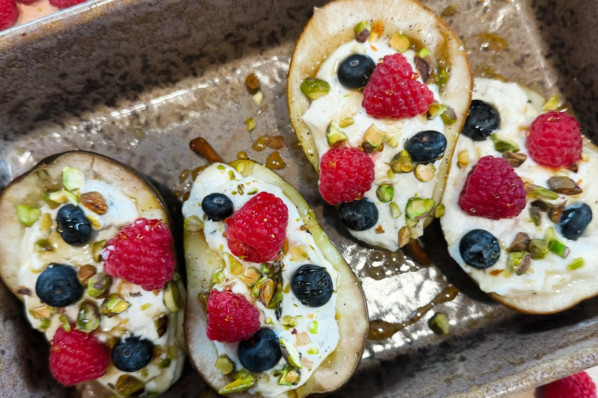

She’s the Goose

Holiday · Appetizer
Warm honey-thyme roasted pears, creamy whipped goat cheese, fresh raspberries and blueberries, and crunchy toasted pistachios.
For the roasted pears
For the whipped goat cheese
For finishing
Prepare the pears. Preheat oven to 375°F. Halve pears lengthwise, leaving skin on. Scoop out cores with a melon baller or spoon to create a hollow for the filling.
Brush with honey butter. Stir melted butter, 1 tablespoon honey, and thyme together. Arrange pears cut-side up in a lightly buttered baking dish. Brush with the mixture; season with salt and pepper.
Roast. Roast 25–35 minutes, basting halfway through, until tender when pierced but still holding their shape.
Whip the goat cheese. While pears roast, blend goat cheese, mascarpone, cream, 1 teaspoon honey, lemon zest, salt, and pepper in a food processor until smooth and airy. Add a little more cream if needed. Chill until assembly.
Toast the pistachios. Toast pistachios in a dry skillet over medium-low heat for 2–3 minutes, stirring frequently. Let cool and chop.
Fill. Let pears cool 5–8 minutes. Spoon or pipe whipped goat cheese into each hollow.
Finish. Top each half with 1–2 raspberries and 3–4 blueberries. Sprinkle with pistachios, add a few thyme leaves, and finish with a light honey drizzle and flaky salt. Serve warm.
Make-ahead tip. Prepare the whipped goat cheese up to 2 days ahead and toast pistachios a day ahead. For best results, roast pears close to serving; add cheese and fresh berries just before serving.